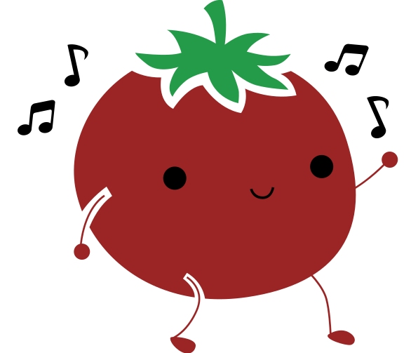

Pomodoro Timer
The Pomodoro Technique is a time management method that breaks work into intervals separated by short breaks.

Ready
25:00
Select a cycle to start...
Pomodoro is complete! Now you can take a break or start a new session.
Total focus time: 0h 0m
Total breaks taken: 0
Sessions completed vs abandoned: 0 vs 0